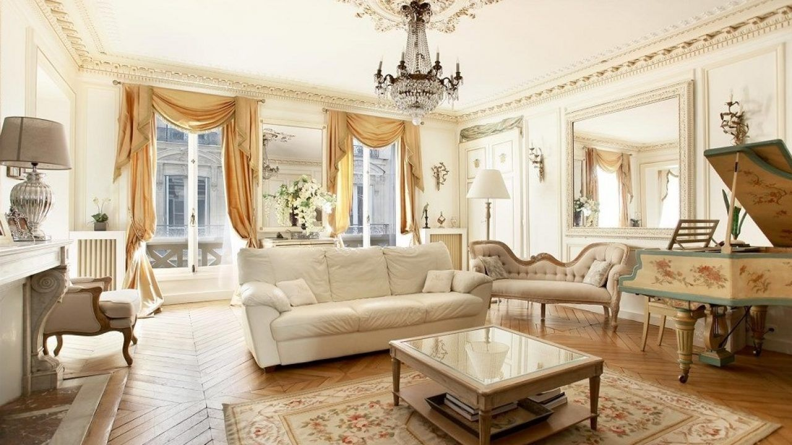
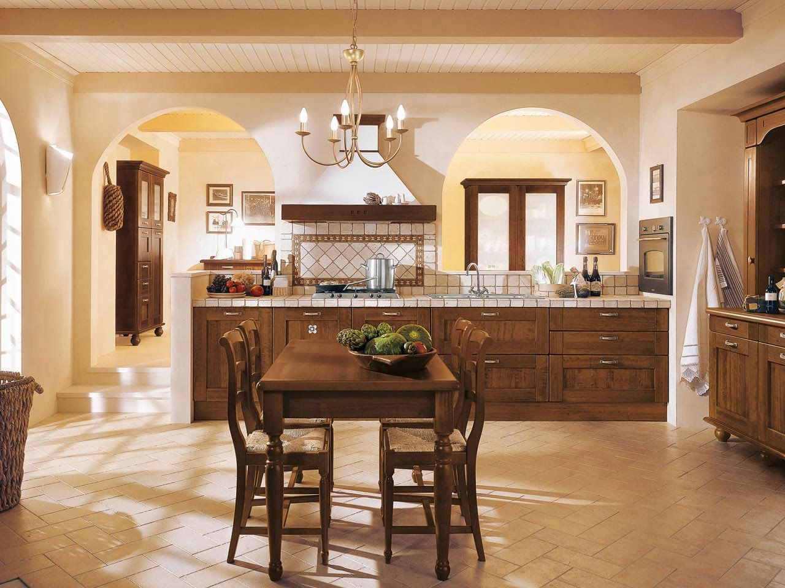
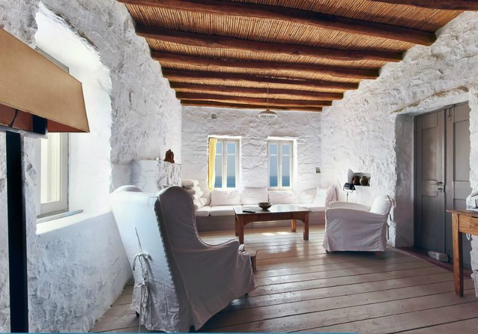

 Desain interior Prancis cocok banget untukmu yang ingin nuansa rumah mewah nan elegan. Penggunaan warna putih dan rosetta menjadikan ciri khas tersendiri untuk desain interior satu ini. Sesuai untuk diaplikasikan pada ruangan anda.
 Unsur kayu, kulit, dan metal biasanya mendominasi desain interior ala Italia. Pemilihan warnanya pun cenderung netral dan menciptakan kesan hangat. Meski sekilas sederhana, rumah klasik Italia tetap memberikan sentuhan elegan. Contohnya, seperti pemilihan motif keramik yang mewah ataupun model lampu yang glamor.
 Rumah klasik Yunani memiliki keunikan sendiri dengan penggunaan mortar semen pada dinding. Inilah yang menjadikan rumah klasik Yunani tampak paling beda dari yang lainnya. Tampilan sculpture-look pada dinding dan kombinasi unsur kayu pun memberikan kesan rustik yang menawan.